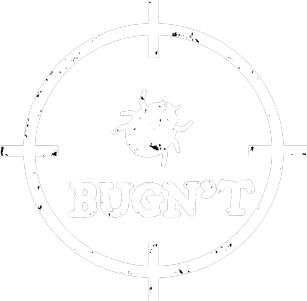

Quidditch Evolution
Challenge your friends through our worldwide servers.
Play the first quidditch game ever developped.
Game Of The Year 2019
Challenge your friends through our worldwide servers.
Play the first quidditch game ever developped.
1e photo
Le développement de jeux vidéo est un domaine qui me passionne depuis plusieus années. J'ai donc démarré ce projet avec une solide base de connaissances, ce qui ne m'a cependant pas empeché de gagner énormément en experience. Je n’ai pas compté mes heures, mais elles se comptent en centaines. Le fait de voir le projet avancer chaque jour, même quand ce n’est pas moi qui le fait avancer m’a beaucoup motivé. J’ai notamment été étonné à plusieurs reprises de la vitesse de l’avancement en regardant le git du projet. J’espère que nous aurons d’autres occasions de mener à bien des projets aussi intéressants et enrichissants.
Avant tout passionée de graphismes, c'est à travers les jeux vidéos auxquels je joue depuis plusieurs années que je me suis intéressée à leur réalisation. N'ayant que peu d'expérience, ce projet m'a énormément appris. Ma curiosité m'a permis de continuer à essayer d'en apprendre le plus possible, aussi bien pour ce projet que pour les projets à venir. Travailler en groupe sur un tel projet est d'autant plus motivant que l'on ne travaille pas seul et uniquement pour nous mais aussi pour les autres. Ce projet m'a permis de développer de nombreuses techniques de travail et d'outils qui me seront sûrement utiles dans le futur.
4e photo